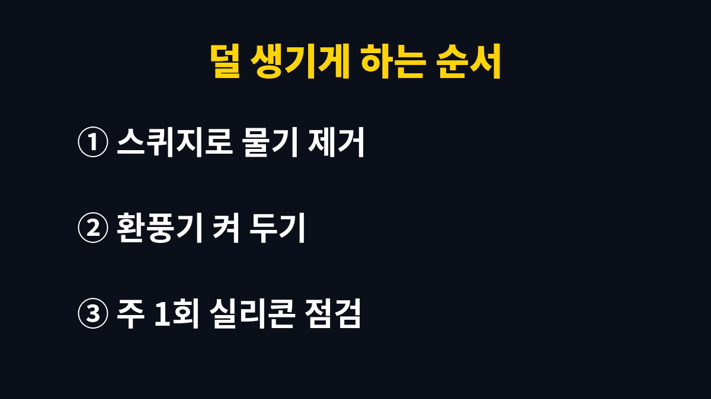

욕실 곰팡이와 물때는 생긴 원인이 달라서 같은 세제로 닦으면 하나는 지워지고 하나는 그대로 남는다.
검게 번지는 것은 곰팡이이고, 하얗게 굳는 것은 수돗물 속 미네랄이 말라붙은 물때다.
둘을 구분하면 세제 고르기가 쉬워지고, 섞으면 위험한 조합도 저절로 피하게 된다.
타일 줄눈이나 실리콘에 검은 점이 박힌 듯 퍼져 있으면 곰팡이다.
수건으로 문질러도 색이 빠지지 않는다.
샤워부스 유리나 수전 주변이 하얗고 거칠게 덮여 있으면 물때다.
손톱으로 긁으면 가루처럼 떨어지는 느낌이 난다.
배수구와 비누받침에 생기는 분홍빛 끈적한 막은 물기 많은 곳에 자라는 세균 막이라 성격이 또 다르다.
| 구분 | 곰팡이 | 하얀 물때 | 분홍 물때 |
|---|---|---|---|
| 색 | 검은색·녹색 점 | 흰색·회색 막 | 분홍·주황 막 |
| 자주 생기는 곳 | 실리콘·줄눈·천장 | 유리·수전·거울 | 배수구·비누받침 |
| 만졌을 때 | 색만 남고 매끈함 | 거칠고 딱딱함 | 미끌미끌함 |
| 맞는 방법 | 염소계 곰팡이 제거제 | 산성 세정제·구연산 | 중성세제로 문지르기 |
염소계 곰팡이 제거제는 제품 표시사항에 적힌 사용량과 방치 시간을 그대로 따른다.
닦기 전에 창문을 열고 환풍기를 켠 뒤 고무장갑과 마스크를 낀다.
휴지를 실리콘 위에 길게 덮고 제거제를 적셔 두면 흘러내리지 않고 그 자리에 머문다.
실리콘 속까지 검게 변한 곳은 표백해도 몇 주 뒤 다시 올라오는 일이 많다.
그런 자리는 계속 약을 뿌리기보다 실리콘을 새로 시공하는 편이 낫다고 나는 판단했다.
청소 후에는 물로 충분히 헹구고 마른 수건으로 물기를 닦아 두어야 곰팡이가 다시 늦게 온다.
물때는 칼슘 같은 미네랄이 쌓인 것이라 산성 세정제나 구연산 희석액으로 불린 뒤 닦는다.
구연산은 물에 녹여 분무기로 뿌리고 몇 분 둔 다음 부드러운 스펀지로 문지른다.
수세미로 세게 긁으면 도금 수전에 흠집이 남는다.
대리석이나 천연석 바닥에는 산성 세정제가 표면을 상하게 할 수 있어 쓰지 않는다.
물때는 오래 둘수록 단단해져서 한 번에 안 지워진다.
그럴 땐 구연산 희석액을 적신 키친타월을 붙여 두고 시간을 들여 불린다.
이건 굳이 강한 세제를 꺼낼 일이 아니다.
중성세제를 묻힌 솔로 문지르고 물기를 닦아 두면 된다.
샴푸 통 바닥처럼 늘 젖어 있는 자리에 먼저 생기므로 통을 들어 올려 두는 것만으로도 덜 생긴다.
염소계 표백제나 곰팡이 제거제를 산성 세정제, 식초, 구연산과 함께 쓰면 유독한 염소가스가 생길 수 있다.
암모니아가 들어간 세정제와도 섞지 않는다.
같은 날 두 가지를 다 써야 한다면 한쪽을 물로 충분히 헹구고 환기한 뒤 다른 쪽을 쓴다.
제품 뒷면의 혼합 사용 금지 문구는 한 번 읽어 두면 다음부터 헷갈리지 않는다.
락스 통 옆에 구연산 스프레이를 나란히 두면 급할 때 번갈아 뿌리기 쉬워서, 나는 보관 자리부터 따로 떼어 두었다.
청소 중 눈이 따갑거나 기침이 나면 바로 욕실 밖으로 나가 창문부터 연다.

나는 스퀴지 하나만 꾸준히 써도 유리 물때가 확실히 덜 생겼다.
반면 매일 구연산을 뿌리는 건 해 보니 굳이 할 필요가 없었다.
물기만 남지 않으면 물때는 한 달에 한두 번 손봐도 충분했다.
천장이나 벽지까지 곰팡이가 번졌다면 표면 청소로 끝나지 않는 경우가 많다.
윗집 누수나 환풍 덕트 문제일 수 있어 관리사무소나 집주인에게 먼저 알리는 게 빠르다.
다음에 확인할 것은 환풍기가 실제로 공기를 빨아들이는지다.
휴지 한 장을 환풍구에 대 보아 붙지 않으면 덕트나 모터 점검을 관리사무소에 요청한다.
※ 2026년 기준 공공기관 안내를 바탕으로 정리한 글이며, 집 구조와 제품에 따라 결과가 다를 수 있어 제품 설명서를 함께 확인하길 바란다.